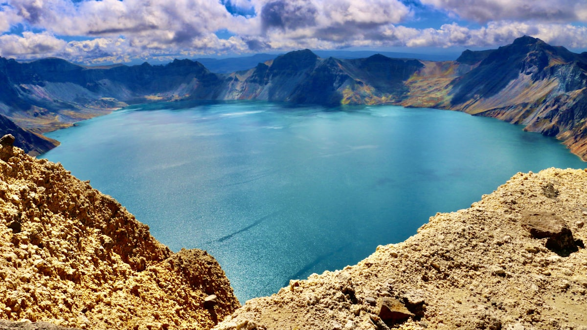
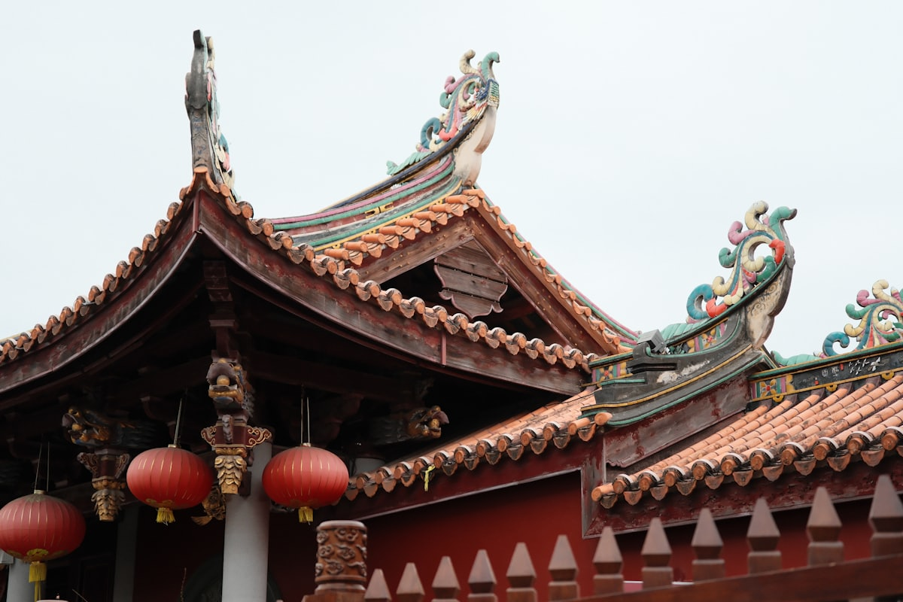
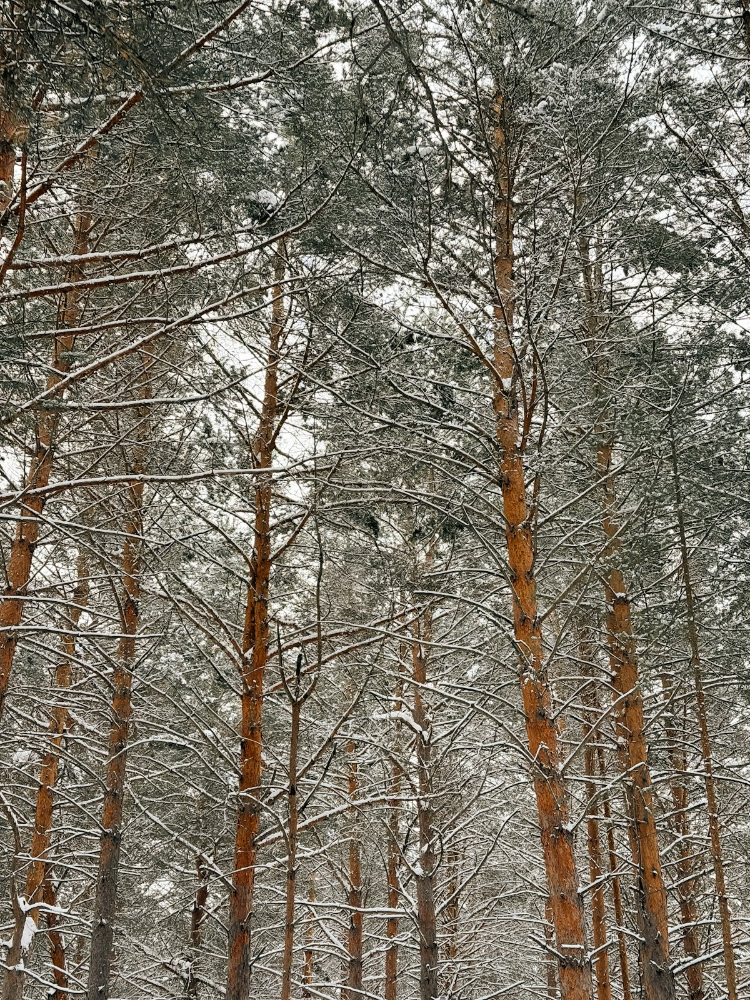
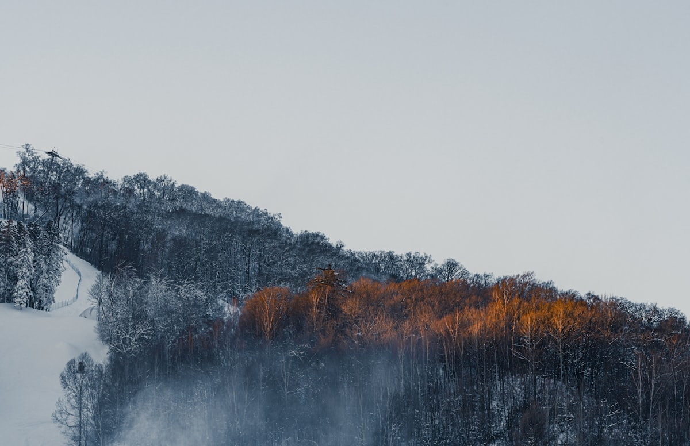
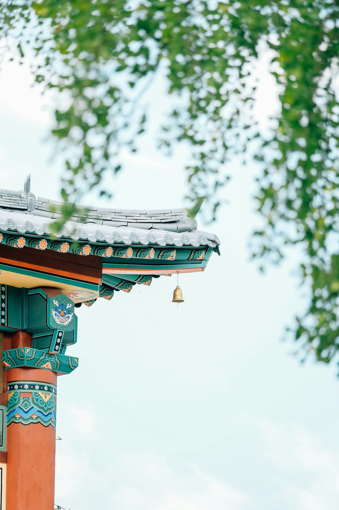
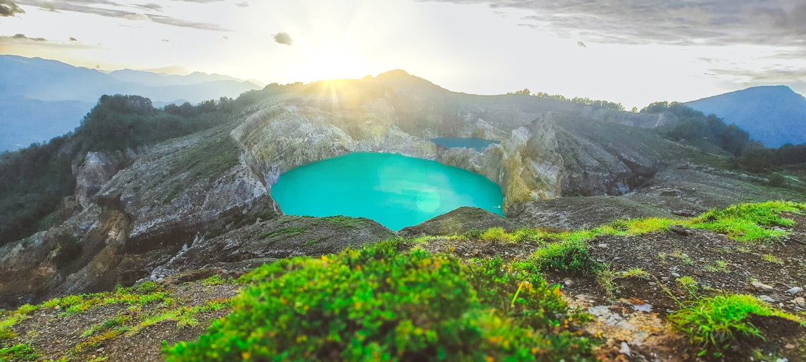
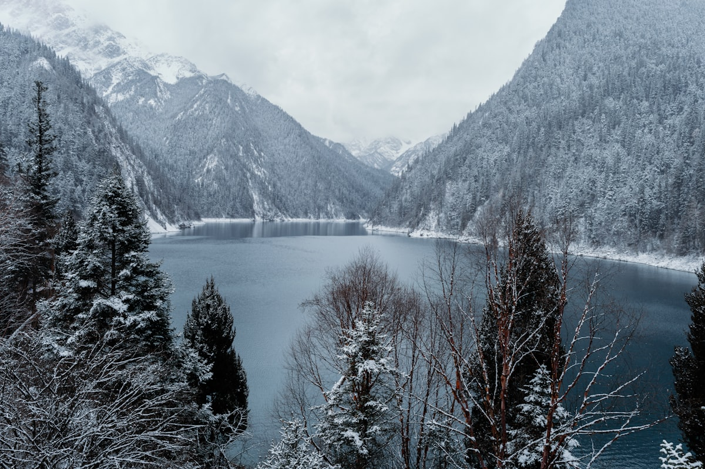

| 事项 | 结论 |
|---|---|
| 事项 | 结论 |
| 推荐方案 | 10 天 9 晚（长春 2 晚 + 长白山 3 晚 + 延吉 2 晚 + 往返过渡） |
| 返程约束 | 第 10 天从长春返程，高铁/航班更全 |
| 行程链 | 伪满皇宫 → 雾凇 → 长白山天池 → 延边 → 防川 |
| 预算（人均） | 经济 3800–4800 ／ 标准 5800–7300 ／ 舒适 9500–12500 |
| 三件提前事 | ① 长白山天池受天气影响大，旺季早订门票 ② 冬季雾凇观景需看预报 ③ 延吉美食排队，热门店提前取号 |
| 季节提醒 | 夏秋看天池最通透；12–2 月看雾凇与雪景，山顶可 -30℃，装备必须专业 |
| 交通卡 | 城际高铁用 12306，长白山景区需提前购票+环保车 |
以下为 10 天 9 晚的推荐节奏。长白山段移动距离远（长春→二道白河约 4–5h），建议把重头戏留足天数。
| 日期 | 行程 | 过夜地 | 主题 |
|---|---|---|---|
| D1 抵长春 | 入住人民大街/伪满皇宫附近，傍晚南湖公园散步 | 长春市区 | 抵达 + 预热 |
| D2 | 伪满皇宫博物院（全天）→ 长春电影制片厂（可选） | 长春市区 | 伪满记忆 |
| D3 | 长春 → 吉林市（高铁 40min）→ 松花湖 → 市区夜景 | 吉林市 | 北国江城 |
| D4 | 雾凇岛（清晨）→ 吉林 → 高铁转大巴赴二道白河 | 长白山北坡 | 雾凇奇观 |
| D5 | 长白山北坡：天池 → 长白瀑布 → 绿渊潭 | 长白山北坡 | 圣山天池 |
| D6 | 长白山西坡：天池西侧 + 锦江大峡谷（或二道白河休整） | 长白山 | 西坡秘境 |
| D7 | 二道白河 → 延吉（大巴约 3h）→ 延边大学网红墙夜景 | 延吉 | 朝鲜族风情 |
| D8 | 延吉朝鲜族民俗园 → 图们口岸 → 珲春防川（一眼望三国） | 延吉 | 边境线 |
| D9 | 延吉 → 高铁返长春，自由购物（长影/同志街） | 长春市区 | 返程过渡 |
| D10 返程 | 上午自由活动，下午从长春返程 | — | 回家 |
以下为 10 天全程的逐小时执行时间线，可当作「当天打开照着走」的清单。标注 ※ 的可选项视体力与天气取舍。
| 时间 | 事项 |
|---|---|
| 14:00–17:00 | 抵达长春（高铁到长春站/长春西，飞机到龙嘉机场，地铁进城） |
| 17:30–18:30 | 入住人民大街一带，放下行李 |
| 19:00–21:00 | 南湖公园散步（免费）：东北最大市内公园之一，晚霞湖景 |
| 21:00 | 回酒店休息，明日看伪满历史 |
| 时间 | 事项 |
|---|---|
| 08:30–12:30 | 伪满皇宫博物院（参考价 70 元，含讲解）：溥仪帝宫，缉熙楼、勤民楼，东北沦陷史陈列馆 |
| 12:30–13:30 | 午餐：长春老字号（酱骨头/雪衣豆沙） |
| 14:00–17:00 | 长影旧址博物馆（参考价 90 元，可选）：新中国电影摇篮，了解长影厂史 |
| 17:30–19:00 | 桂林路/重庆路商圈晚餐 |
| 19:30 | 回酒店，准备明日赴吉林市 |
| 时间 | 事项 |
|---|---|
| 08:00–09:00 | 高铁长春→吉林市（约 40min，二等座约 40 元） |
| 09:30–12:30 | 松花湖（游船参考价 100 元）：丰满水电站大坝、湖光山色，夏季可环湖 |
| 13:00–14:00 | 午餐：吉林市乌拉街满族火锅/煎粉 |
| 14:30–17:00 | 北山公园（免费）：关帝庙、揽月亭，登高看江城全貌 |
| 18:00–20:00 | 吉林市区晚餐，江边夜景，为明早雾凇做准备 |
| 时间 | 事项 |
|---|---|
| 05:30–08:30 | 雾凇岛（韩屯，参考摆渡+门票约 60 元）：清晨雾凇最盛，江上雾气、琼枝玉树 |
| 08:30–09:30 | 回吉林市早餐 |
| 10:00–11:00 | 高铁吉林市→敦化（约 1h），午餐 |
| 11:30–15:30 | 敦化 → 大巴/拼车赴二道白河镇（约 3h） |
| 16:00–18:00 | 入住二道白河，长白山北坡游客中心附近踩点 |
| 19:00 | 晚餐：朝鲜族风味 / 长白山人参鸡 |
| 时间 | 事项 |
|---|---|
| 07:00–08:00 | 长白山北坡游客中心购票（参考价 105 元 + 环保车 85 元） |
| 08:00–10:00 | 环保车上山 → 换乘越野车（参考价 80 元）上天池，看火山口湖 |
| 10:00–12:00 | 长白瀑布：天池唯一的出口，落差 68 米；聚龙泉温泉可煮鸡蛋 |
| 12:30–13:30 | 景区内午餐 |
| 14:00–16:30 | 绿渊潭 + 小天池 + 地下森林：原始林海栈道，负氧离子拉满 |
| 17:30 | 下山回二道白河晚餐休息 |
| 时间 | 事项 |
|---|---|
| 07:30–08:30 | 出发至西坡游客中心（约 40min 车程，门票参考价 100 元 + 环保车） |
| 09:00–11:30 | 西坡天池观景台：1442 级台阶登顶，天池视野最开阔（西坡视角更原始） |
| 12:00–13:00 | 景区内简餐 |
| 13:30–16:00 | 锦江大峡谷：火山岩峡谷、松桦林海，峡谷徒步约 3 公里 |
| 17:00–18:30 | 返回二道白河，晚餐后可泡长白山火山温泉（可选） |
| 时间 | 事项 |
|---|---|
| 08:30–12:00 | 大巴/拼车二道白河→延吉（约 3h） |
| 12:30–13:30 | 午餐：延吉正宗朝鲜族餐（参鸡汤、石锅拌饭） |
| 14:30–17:00 | 延吉朝鲜族民俗园（免费，园区较大）：朝鲜族传统民居、打糕体验 |
| 17:30–19:00 | 延边大学网红墙（免费）：双语招牌墙，日落时分最出片 |
| 19:30 | 延吉夜市：烤串、米肠、米酒 |
| 时间 | 事项 |
|---|---|
| 08:00–09:00 | 延吉 → 图们（高铁约 15min，或包车） |
| 09:00–11:00 | 图们口岸（参考价 25 元）：中朝铁路大桥，桥头观朝鲜南阳市 |
| 11:00–13:00 | 图们→珲春（约 1h），午餐：珲春俄朝风味 |
| 13:30–16:00 | 防川景区（参考价 40 元）：「一眼望三国」——中国/俄罗斯/朝鲜交界，张鼓峰 |
| 16:30–18:30 | 返程延吉，晚餐 |
| 时间 | 事项 |
|---|---|
| 08:30–11:00 | 延吉市场采购：明太鱼、辣白菜、打糕等朝鲜族特产 |
| 11:30–14:00 | 高铁延吉→长春（约 2.5h，二等座约 170 元） |
| 15:00–17:00 | 入住后自由：长春同志街/这有山商场（网红商场） |
| 18:00–19:30 | 晚餐：东北菜+最后一顿冷面 |
| 时间 | 事项 |
|---|---|
| 08:30–11:30 | 自由活动：长春购买人参、木耳等长白山特产 |
| 11:30–12:30 | 午餐 |
| 13:00–16:00 | 退房，赴长春站/龙嘉机场，返程 |
| 16:30 | 抵达出发地，结束吉林 10 天行程；人参等特产注意保质 |
必去（必去）/ 顺路（顺路）/ 可跳过（可跳过）。

必去
必去
顺路
顺路
顺路
可跳过图片为 Unsplash 主题图（长白山、雪林、庙宇、湖泊主题），用于页面配图。更多免费好去处：长春南湖公园、吉林北山公园、延边大学校园。
点击左侧节点可在地图上定位；点击地图 marker 会高亮对应节点。坐标为 WGS-84 转 GCJ-02 纠偏后标注。
以下为单人、不含购物的估算；门票为参考价，以现场为准。交通按高铁往返（从华北出发约 1000–1400 元），长白山段需另计大巴/拼车。
| 项目 | 经济（3800–4800） | 标准（5800–7300） | 舒适（9500–12500） |
|---|---|---|---|
| 往返交通 | 高铁约 1000–1400 | 高铁/飞机约 1500–2500 | 飞机+接送约 3000–4000 |
| 省内城际 | 高铁+大巴约 500–700 | 高铁+拼车约 800–1200 | 全程包车 2000–3500 |
| 住宿（9 晚） | 青旅/快捷 900–1300 | 连锁/温泉酒店 2000–3000 | 长白山度假酒店 5000–7500 |
| 门票 | 基础景点约 450 | 含天池越野车等约 700 | 全含 + 温泉约 1100 |
| 餐饮（10 天） | 650–900 | 1300–1700（含朝鲜族餐） | 2200–3000（含参鸡汤/海鲜） |
| 市内交通 | 公交+地铁 150–200 | 地铁+打车 300–450 | 打车/包车 600–1000 |
带娃推荐：伪满皇宫（历史馆有互动）、长白山地下森林步道、延吉民俗园（打糕体验）；西坡 1442 级台阶对低龄儿童较累，可只走北坡。
12–2 月是雾凇与雪景最佳窗口，天池冰封也别有壮美；但山区 -25℃ 上下，需羽绒服+雪地靴+暖宝宝全套装备，自驾务必防滑链。
| 方式 | 时长 | 参考价 | 备注 |
|---|---|---|---|
| 高铁（推荐） | 北京→长春 4–5h | 二等座 400–500 元 | 长春站/长春西，长吉城际密集 |
| 飞机 | 北上广深等直达 2–4h | 500–2000 元 | 长春龙嘉机场，地铁进城 |
| 大巴/拼车 | 长春→长白山 4–5h | 60–120 元 | 经敦化/二道白河，旺季班次多 |
| 区域 | 价格/晚 | 优点 | 短板 |
|---|---|---|---|
| 长春人民大街 | 快捷 250–400 / 星级 600–1200 | 近伪满皇宫、地铁 1 号线 | 旺季房源紧张 |
| 吉林市江畔 | 快捷 200–350 | 近松花湖与雾凇观赏点 | 老城区酒店偏旧 |
| 二道白河（长白山） | 民宿 300–600 / 度假酒店 800–2000 | 北坡住宿基地，温泉多 | 冬季贵且紧俏 |
| 延吉市区 | 快捷 250–450 | 美食与网红墙步行可达 | 旺季周末难订 |